ShowPulse is a movie showtime and ticket check-in app designed to simplify how users discover movies and view showtimes.
Information is scattered across multiple screens
Search flows are confusing and inconsistent
Seat selection is unclear and difficult to understand
The check-in process causes uncertainty for users

To understand how users discover movies, browse showtimes, and check in at theaters, I conducted user interviews and usability tests with a diverse group of moviegoers. The research revealed that users primarily want a fast, simple, and reliable way to find movies and book tickets without navigating confusing or cluttered interfaces. Many participants struggled with existing apps due to scattered information architecture, inconsistent search experiences, and unclear ticket-check-in flows.
Users struggle with overly complex navigation, small fonts, and too many steps — deterring effective app use.
Users are frustrated when apps fail to provide real-time updates on movie availability and seat reservations.
Users feel disappointed by the lack of personalized movie recommendations.
Research showed that there was a clear need for a movie-booking app that emphasizes simplicity, clarity, and personalization. Users consistently gravitate toward interfaces that reduce cognitive load, guide them effortlessly, and adapt to their preferences. Current solutions fail to meet these expectations, indicating a strong opportunity to design an experience that is more accessible, intuitive, and aligned with users' real-life decision-making behaviors.
With a clear understanding of user behaviors, needs, and pain points, the next step was to empathize more deeply with the people behind the data. I defined key user personas and reframed the insights into a focused problem statement to guide design decisions.
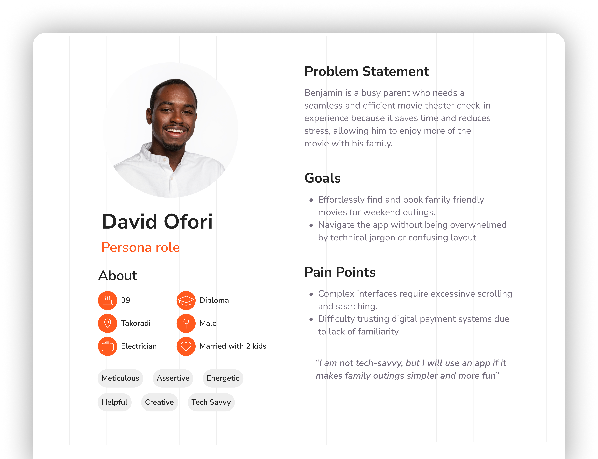
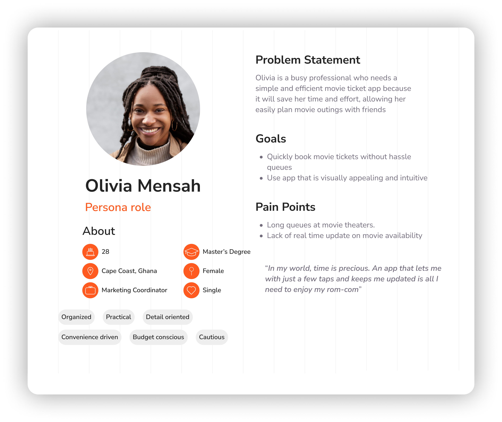
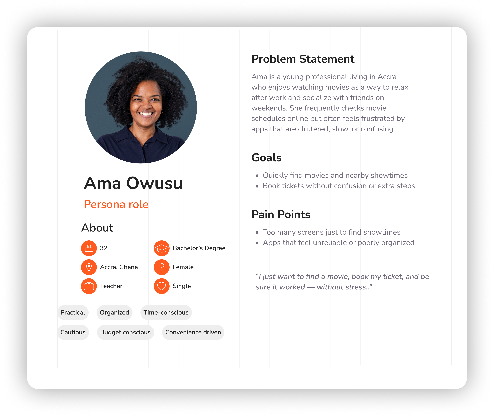
Despite different user types, a core need emerged across all personas: users wanted a fast, simple, and reliable way to discover movies, view showtimes, and book tickets without confusion or friction.
Although multiple personas were identified, a single user journey map was created to represent the core movie discovery and ticket-booking flow shared across users, using Benjamin as the primary lens due to his higher sensitivity to friction and complexity.
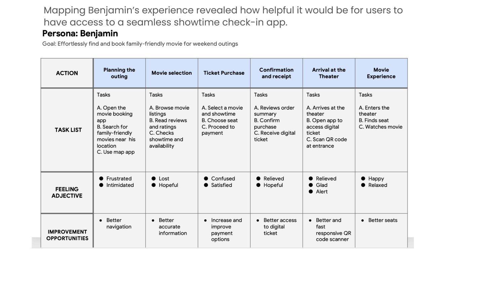
Based on the research insights, user pain points, and the core journey map, I defined a clear goal to guide the design of ShowPulse.
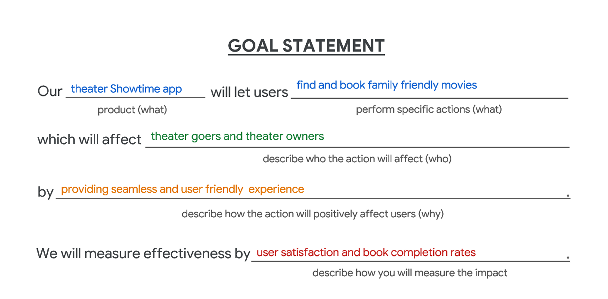
To understand the value of ShowPulse beyond user experience, it's important to consider the business outcomes this solution enables.
The ShowPulse solution will improve key business outcomes by making movie discovery, booking, and check-in faster and more intuitive. A clearer movie/theater search, streamlined steps, and smoother seat selection will help more users complete bookings, boosting ticket revenue, reducing confusion, and encouraging repeat usage.
Higher conversion rates
Lower drop-off during booking
Improved user satisfaction scores
More returning users
Operational gains, including faster check-ins and fewer seat issues
With a clear understanding of user goals and pain points, I began structuring ShowPulse by defining its information architecture. I organized the app's content and features into logical categories, established a clear hierarchy for navigation, and ensured that key tasks like discovering movies, selecting showtimes, and booking tickets are easy to find and access. This IA foundation sets the stage for an intuitive and efficient user experience.
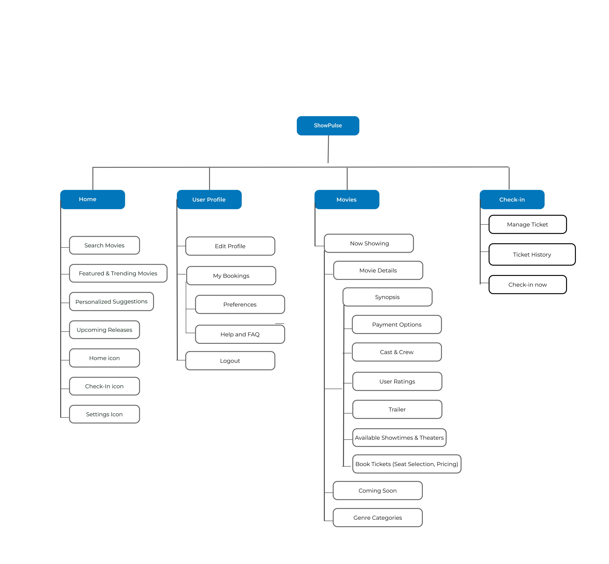
To design an efficient and user-centered experience, I mapped the key steps a user takes in ShowPulse. This flow highlights critical screens, actions, and decision points that guide users toward a successful movie booking with minimal friction.
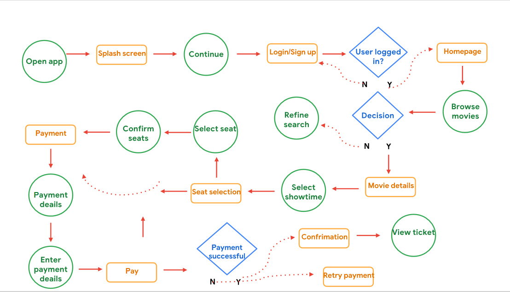
During the paper wireframing phase, I focused on iterating on the homepage, as it serves as the primary entry point for users. Multiple variations were explored to test content hierarchy, movie discovery patterns, and the placement of key actions before selecting a direction to carry forward.
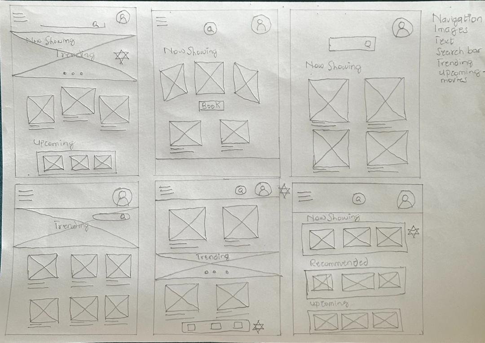
After selecting a direction from the paper wireframes, I translated the layouts into low-fidelity digital designs. I then created a clickable prototype to validate navigation, task flow, and key interactions before moving into high-fidelity design.

I conducted usability testing on the low-fidelity prototype to evaluate how easily users could complete core tasks such as selecting a movie, choosing a theater, and booking seats. These sessions focused on identifying points of confusion, validating navigation clarity, and uncovering usability issues that could impact the booking experience before moving into high-fidelity design.
80% of users were unsure how to book multiple seats. Insight: Enhance the seat selection interface for clarity.
75% of users did not see key movie details readily when they opened the Movie Details page.
50% of participants experienced difficulties booking their preferred theater due to limited options and day selection challenges.
The usability study highlighted key areas where users faced difficulties, including theater selection, seat booking, and movie details visibility. Addressing these insights will help streamline the user flow, reduce confusion, and improve the overall experience on ShowPulse.
Based on usability testing insights, I refined the prototype to address key pain points, such as seat selection clarity and simplifying theater and movie choice. I enhanced visual hierarchy, standardized components, and polished interactions to make the interface more intuitive and cohesive. These refinements ensure the design is both user-friendly and visually consistent across the booking experience.
Challenge: 50% of participants struggled to book their preferred theater because they were unable to easily view or select alternative viewing days, which limited their booking options.
Solution: I introduced a clear and prominent day selection component that allows users to quickly choose their preferred viewing day. This improvement increases booking flexibility and reduces friction during theater selection.
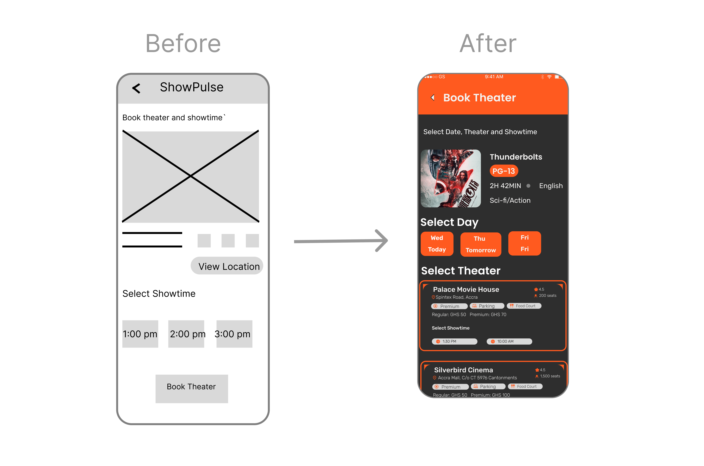
Challenge: 75% of users did not immediately notice key movie details when opening the Movie Details page, making it harder for them to access important information.
Solution: I added a clearly labeled "More Info" affordance that guides users to additional movie details, improving content discoverability and reducing confusion.
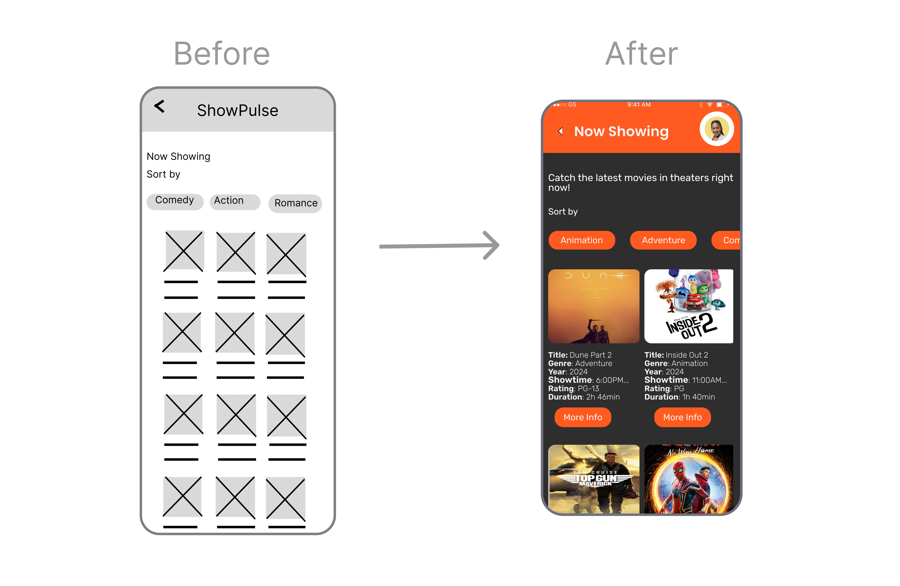
Challenge: 80% of users were unsure how to select and book multiple seats, indicating confusion around seat availability and selection states.
Solution: I enhanced the seat selection experience by introducing a clear seat legend and distinct visual states for available, selected, and taken seats. This improvement helps users quickly understand how to select multiple seats and interpret seat availability with confidence.
Note: The before-and-after mockups focus on the seat grid and legend only, highlighting the area where users experienced the most confusion.
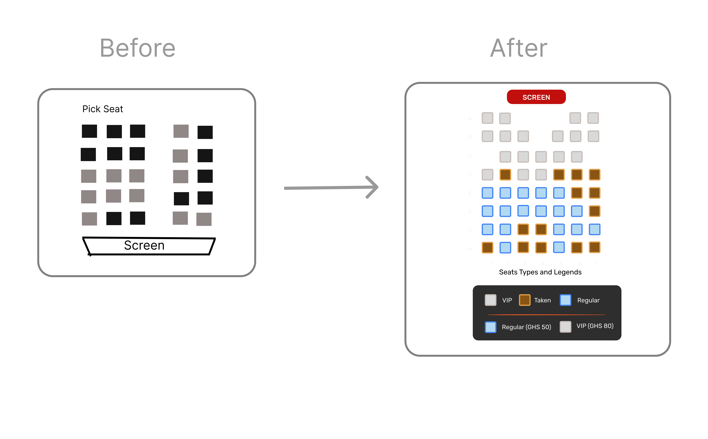
The high-fidelity prototype showcases the polished visual design, refined interactions, and improved usability informed by earlier low-fidelity testing. Key areas, such as seat selection, movie details, and day selection, were iteratively enhanced to address user pain points identified in the usability study.
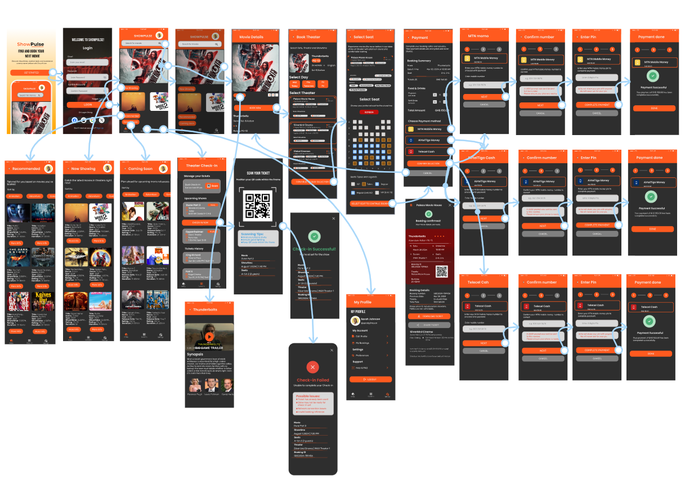
To maintain visual consistency and improve usability across the product, I defined a foundational design system that combines color and typography guidelines. The system establishes clear visual hierarchy, supports readability, and ensures consistent styling across key screens and interactions.

The iconography system was designed to be simple, consistent, and easily recognizable, supporting key actions and navigation while reducing cognitive load across the interface.
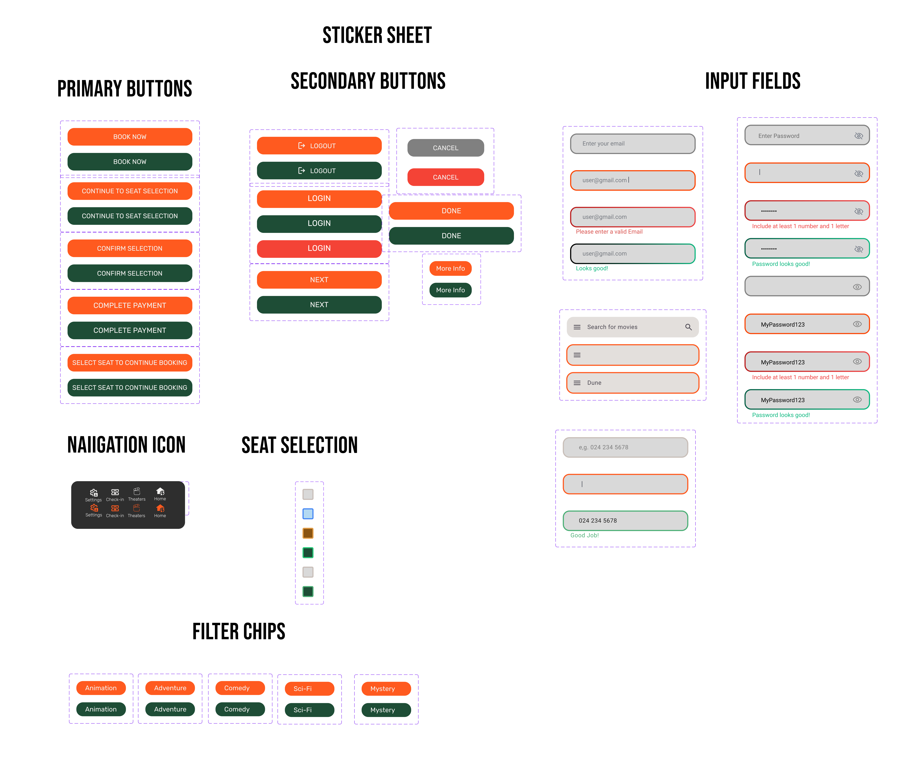
These mockups present a selection of key screens that demonstrate the end-to-end user flow, from discovery to completion. They highlight how the final visual design, layout consistency, and interaction patterns work together to support usability and clarity across the product.

Ensures text, icons, and key elements are easily distinguishable for users with visual impairments.
Clear fonts and hierarchy allow users to scan content and understand information quickly.
Buttons, seat selections, and navigation elements provide visual cues on interaction.
Navigation supports screen readers and predictable gestures, making the app usable for all.
As a movie lover, I wanted to create an experience that makes discovering and booking movies feel simple and enjoyable rather than stressful. Working through research, low-fidelity flows, and usability insights helped me see how small design decisions can either support or break that experience. This case study reinforced my focus on clarity, consistency, and designing with real user behavior in mind.